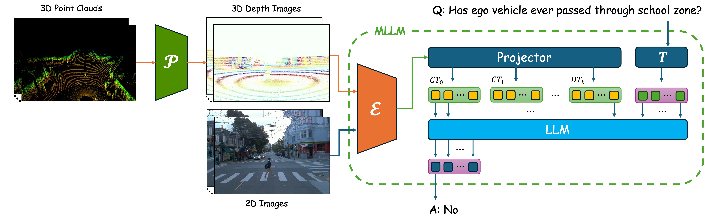

𝒫: LiDAR-to-Camera Projector; ℰ: Vision Encoder; 𝑇: Text Tokenizer; LLM: Foundational LLM Decoder
D3VL is a Multimodal Large Language Model (MLLM) framework designed to enhance an autonomous
vehicle's understanding of driving scenes by combining multimodal (2D + 3D) time series data.
By processing 3D data as depth images, D3VL is able to efficiently pass spatial information
directly through standard vision encoders.
Through fine-tuning, the vision encoder and vision-language projector specifically learn how
to effectively encode these depth images,
while the backbone LLM learns how to decode them.